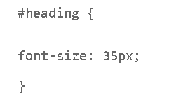
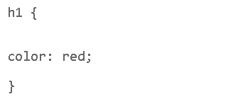
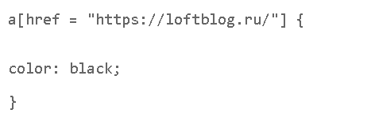
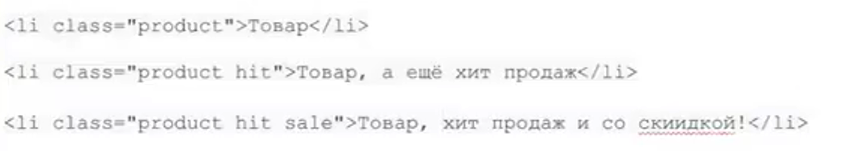
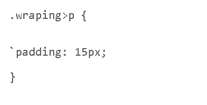

Различают следующие типы селекторов CSS:
Селектор класса
Селектор по классу находит элемент на странице по значению атрибута class. При создании CSS-правила точка "."
перед именем класса обязательна.
Пример :
CSS селекторы по id
К атрибутам HTML-тегов относится и id. Атрибут этот применяется к индивидуальному элементу, т.е. элемент с id может быть в единственном экземпляре на странице согласно правилам семантики. В каскадных таблицах стилей атрибуты эти используются крайне редко, их применение к ним вообще не приветствуется, они предназначены в основном для работы с javascript. На всякий случай полезно знать. что селектор по id в CSS-правиле оформляется так:
Селектор по тегу
Запись селекторов по тегам также не представляет из себя никакой сложности. Выглядит она следующим образом:
Селектор по атрибуту
Далее будут рассмотрены CSS селекторы по атрибутам HTML-тегов. Их запись также не представляет особой сложности:
Селектор по нескольким классам
У HTML-документа может быть сколько угодно классов, в этом случае они перечисляются в атрибуте через пробел, например :
Использование нескольких классов, это типовой прием, который еще называется миксованием классов. Обычно его используют так : в один класс выносят общее оформление, а в дополнительных описывают его модификации. В примере выше размеры карточек товаров можно описать в CSS-правиле .product, а особый фон для хита продаж - в правиле .hit. В общем, удобный прием, помогает сократить дублирование кода.
Вложенные селекторы
При создании веб-страницы часто приходится вкладывать одни теги внутрь других. Чтобы стили этих тегов
использовались корректно, помогут вложенные селекторы. Например, задать стиль тега b только когда он
распологается внутри контейнера p. Таким образом можно одновременно установить стиль для отдельного тега, а
также для тега, который находится внутри другого.
Синтаксис: E F {Описание правил стиля}
Здесь E это родительский тег, а F дочерний тег, расположеный в контейнере Е.
Дочерние селекторы
Дочерние селекторы CSS отличаются от селекторов потомков тем, что под дочерним подразумевается только первый потомок, никакие "внуки" и "правнуки" не попадают в эту категорию.
Сестринские селекторы
При помощи сестринского селектора создается CSS-правило для HTML-элементов, расположенных на одном уровне, причем тот элемент, который записывается как сестринский должен быть самым ближайшим из себе подобных к тому элементу, к которому он записывается в "сестры".